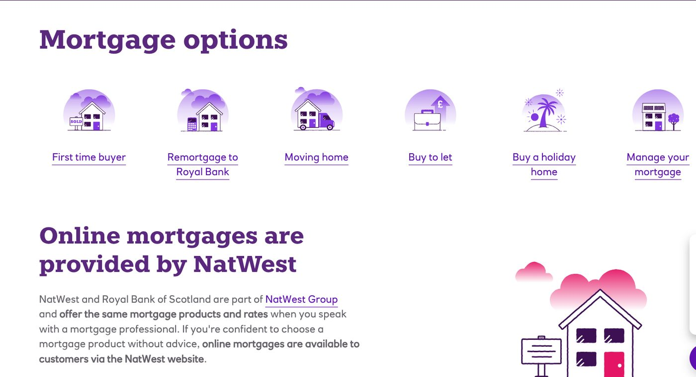

The Challenge
RBS's mortgage pipeline was hindered by siloed legacy systems, complex workflows and high drop-off among first-time buyers. The bank needed a human-centric ecosystem that simplified the mortgage journey while streamlining backend technology and operations.
The Approach
- Agile inside waterfall. Introduced agile service-design sprints inside an established waterfall delivery structure, without derailing existing release schedules.
- Bridging physical and digital. Connected in-branch advisor tools with new consumer-facing mobile journeys so a customer's story carried across channels.
- Cross-functional orchestration. Aligned mortgage underwriting, branch operations and digital product teams around one redesigned customer lifecycle.
The Impact
- One connected journey. Replaced disconnected branch and digital touchpoints with a single first-time-buyer experience.
- Proof of method. Demonstrated that agile service design could operate inside a highly regulated, waterfall-governed bank programme.
- Foundation for scale. Established the UX blueprint RBS carried into later phases of the mortgage platform.
